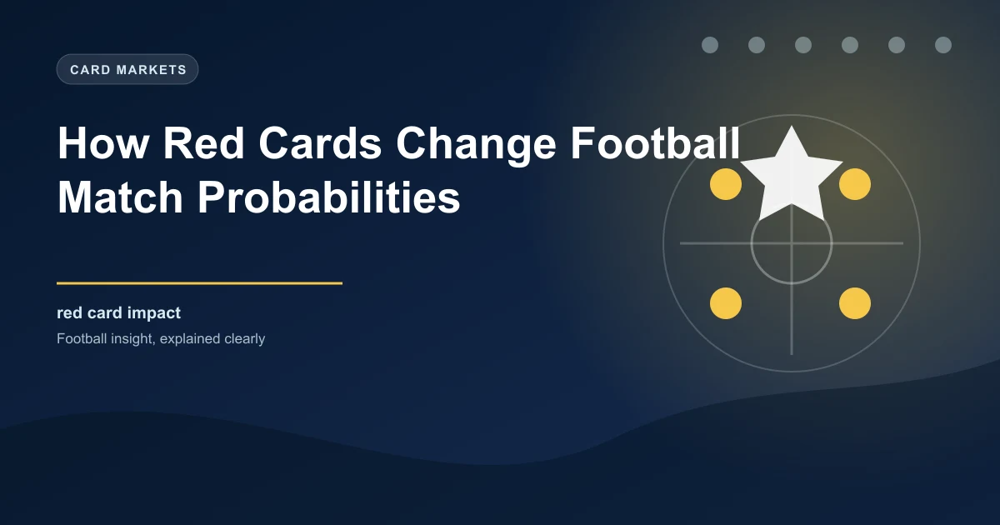

Blog / How Red Cards Change Football Match Probabilities
How Red Cards Change Football Match Probabilities
Published July 26, 2026 · 10 min read

A red card is one of the most dramatic events in football, and its impact on match probabilities is immediate and measurable. When a team goes down to ten men, the balance of the match shifts significantly. But the degree of that shift depends on several factors, including when the red card occurs, which player is sent off, and the tactical setup of the team affected.
For bettors, understanding the statistical impact of red cards creates opportunities in live betting and helps you assess pre-match scenarios where red card risk is elevated.
The Statistical Impact of a Red Card
Research across multiple leagues consistently shows that a red card reduces the affected team's probability of winning by approximately 15-25%, depending on the match context. The timing of the dismissal is the most important variable.
Win Probability Shift by Red Card Timing
Red card at 80+ minutes: Minimal impact. The team has already played most of the match at full strength. Win probability drops by roughly 5-10%.
Red card at 60-79 minutes: Moderate impact. The team must defend for 10-30 minutes with fewer players. Win probability drops by roughly 10-18%.
Red card at 40-59 minutes: Significant impact. The team must play at least a full half with fewer players. Win probability drops by roughly 18-25%.
Red card at 0-39 minutes: Maximum impact. The team plays the majority of the match with a numerical disadvantage. Win probability drops by roughly 25-35%.
The numbers are approximate because the impact varies based on which team receives the red card, the quality gap between the two teams, and the score at the time of the dismissal.
Which Player Gets Sent Off Matters
Not all red cards have equal impact. A dismissal of a central defender or a defensive midfielder has a much larger effect on match outcome than the dismissal of a winger or a striker.
Impact by Position
Goalkeeper: Most devastating. Forces an immediate substitution (if available) or an outfield player in goal. Win probability drops by 35-45%.
Centre-back: Forces a defensive reshuffle. Vulnerability on set pieces and through the centre increases dramatically. Win probability drops by 25-35%.
Central midfielder: Reduces control of the middle third. Fewer passing options and less pressing coverage. Win probability drops by 20-30%.
Full-back: Forces a winger to cover or a formation change. Vulnerability on one flank increases. Win probability drops by 15-22%.
Winger/attacker: Least impact on defensive stability. Reduces attacking threat but the team can often maintain its defensive structure. Win probability drops by 12-18%.
Red Cards and Goals Markets
The impact of a red card on goals markets is nuanced. The common assumption is that fewer players means fewer goals, but the reality is more complex.
When a team goes down to ten men, they typically adopt a more defensive formation. This reduces their attacking output but can actually increase the number of goals in the match because the team with eleven players pushes forward more aggressively, creating more chances and more space for counter-attacks.
Over 2.5 goals: Mixed impact. If the red card team was already losing, the leading team may score more, pushing the total over. If the match was level, the defensive shift by the ten-man team may reduce overall goal expectancy.
BTTS: Generally less likely after a red card because the team with fewer players scores less frequently.
Under 2.5 goals: More likely if the red card occurs in a level match, as the ten-man team parks the bus.
Corners: Often increase after a red card because the dominant team attacks more frequently, producing more corners.
Live Betting After a Red Card
Live betting after a red card is one of the most popular in-play scenarios, and it requires quick analysis to identify value. Bookmakers adjust their odds rapidly after a dismissal, but the speed and accuracy of that adjustment varies.
Identify the dismissed player's position. A centre-back being sent off has a much larger impact than a winger. Adjust your probability assessment accordingly.
Check the score at the time of the red card. If the ten-man team is already trailing, they must push forward, which creates space for the opposition but also increases their own attacking risk. If the match is level, the ten-man team will likely sit deep.
Assess the time remaining. More time means more opportunity for the numerical advantage to tell. A red card at 45 minutes has twice the impact of one at 75 minutes.
Look for overreactions. Bookmakers sometimes over-adjust to red cards, especially in the immediate aftermath. If you believe the ten-man team can hold on, there may be value in backing them at the inflated odds.
Consider the team's depth. A team with strong substitutes can often maintain performance after a red card. A team with a thin squad may collapse.
Pro Tip: The 10-Man Counter-Attack
Teams that go down to ten men sometimes become more dangerous on the counter-attack because they have fewer players committed forward, creating space for quick transitions. Backing both teams to score after a red card can offer value when the ten-man team has fast, direct attackers.
Red Card Risk Factors
Some matches have a higher probability of producing a red card than others. Identifying these matches before they start can help you prepare for live betting opportunities or avoid matches where a red card could undermine your pre-match bet.
High-foul teams: Teams that commit more fouls per match have a higher red card risk. Check the disciplinary records of both teams.
Derby matches: Local rivalries produce more yellow and red cards due to increased intensity and emotion.
Referee tendencies: Some referees show more cards than others. Check the referee's average cards per match.
Desperate situations: Teams fighting relegation or chasing a title sometimes take more risks defensively, leading to more dismissals.
Tactical matchups: When a high-pressing team faces a team that plays out from the back, the pressing team commits more fouls in dangerous areas, increasing red card risk.
Pre-Match Red Card Hedging
If your pre-match analysis suggests a high red card risk, you can structure your betting to protect against the impact. For example, if you are backing a team to win but their opponent has a high foul rate and a disciplinary problem, you might also place a small bet on the draw as insurance against a red card disrupting the match.
Alternatively, you can wait and place your bet after the match starts, monitoring the first 15-20 minutes for signs of aggressive play that might lead to a dismissal. This patience can sometimes secure better odds than betting pre-match.
Red Cards Are Unpredictable
Even with the best analysis, red cards are inherently unpredictable. A single moment of petulance or a controversial decision can change everything. Never build your entire betting strategy around red card expectations. Use red card risk as one factor among many, not as the primary driver of your decisions.
Track Live Match Events
Use our In-Play Tips to get real-time insights when red cards and other key events change the match dynamics.
 Win
Win